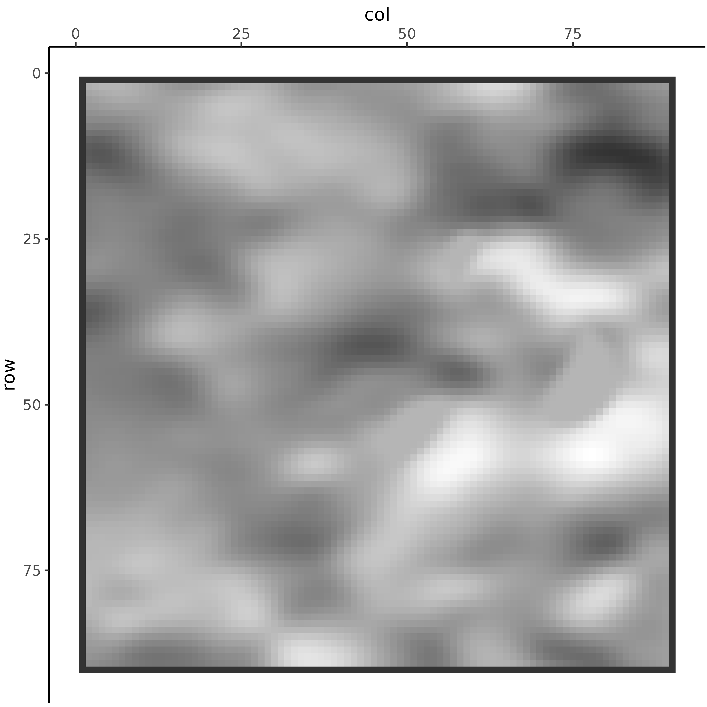
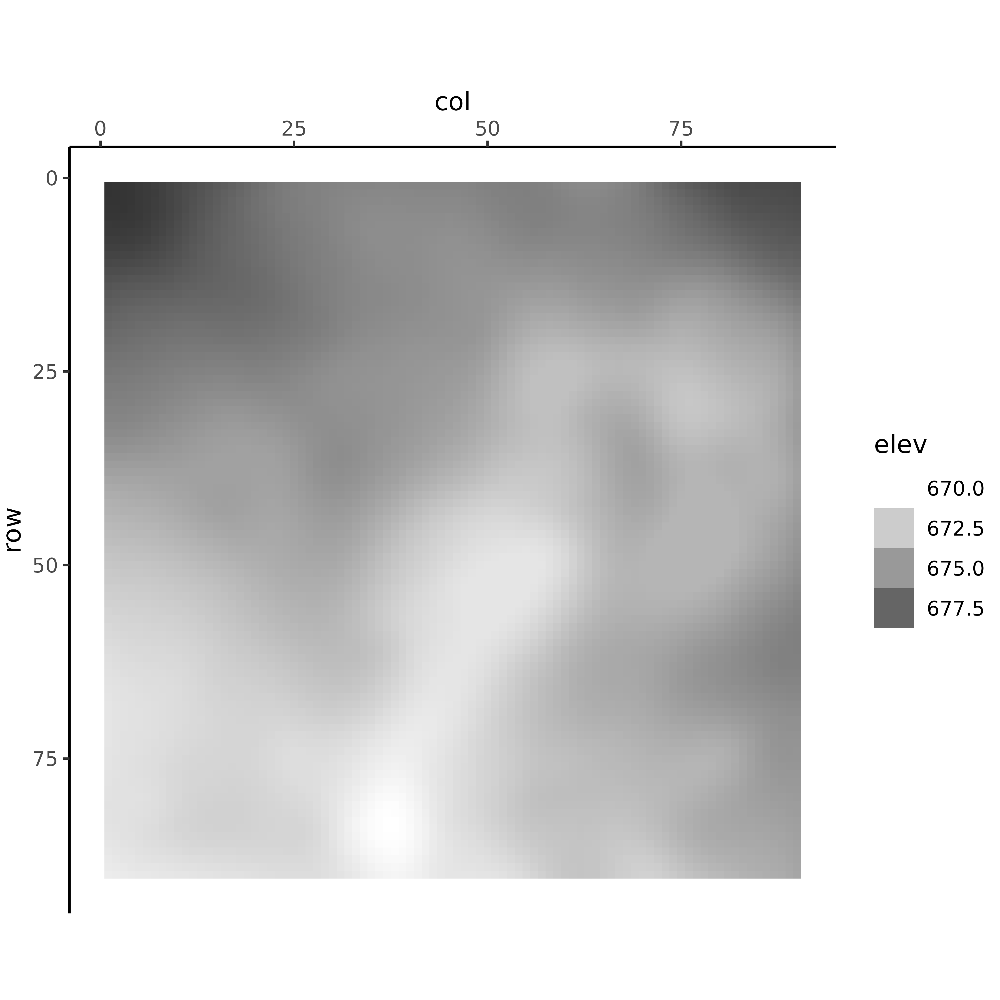
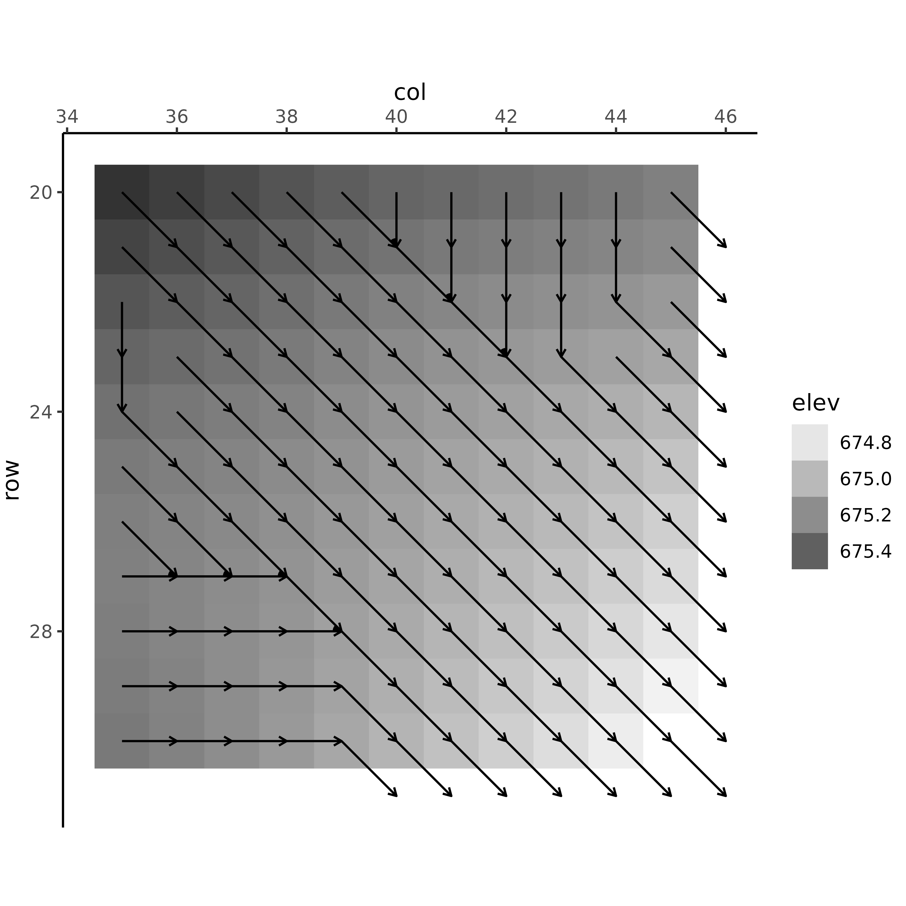
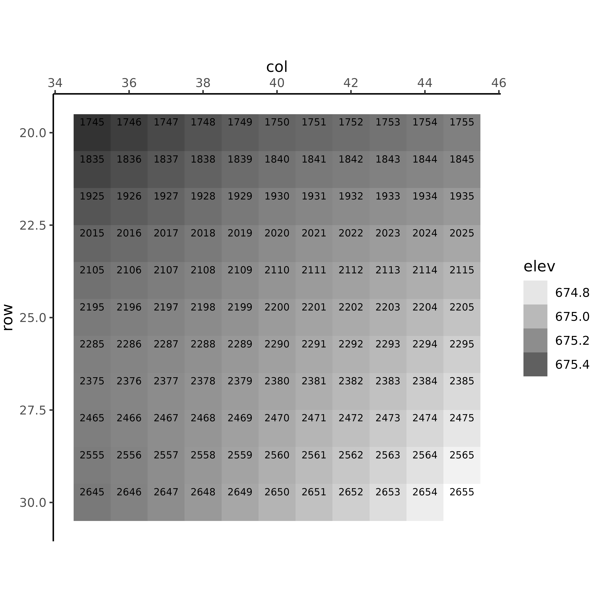
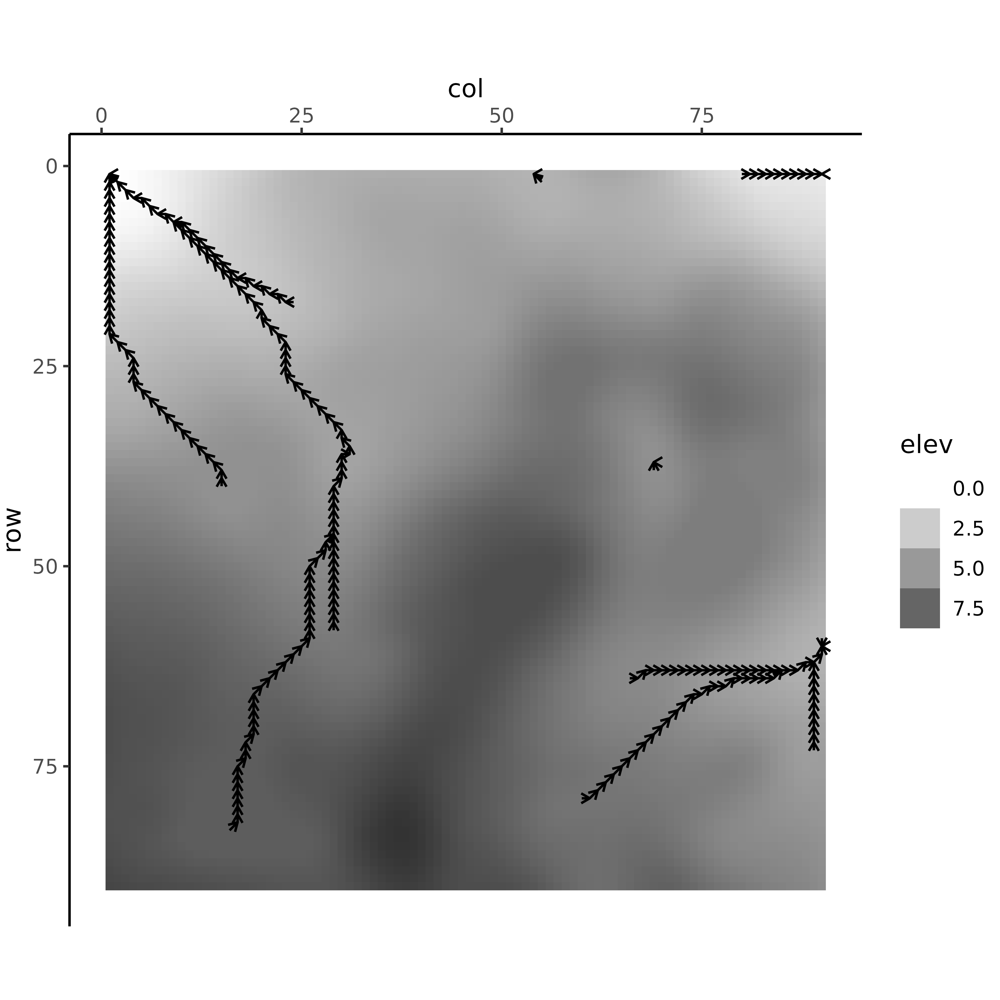
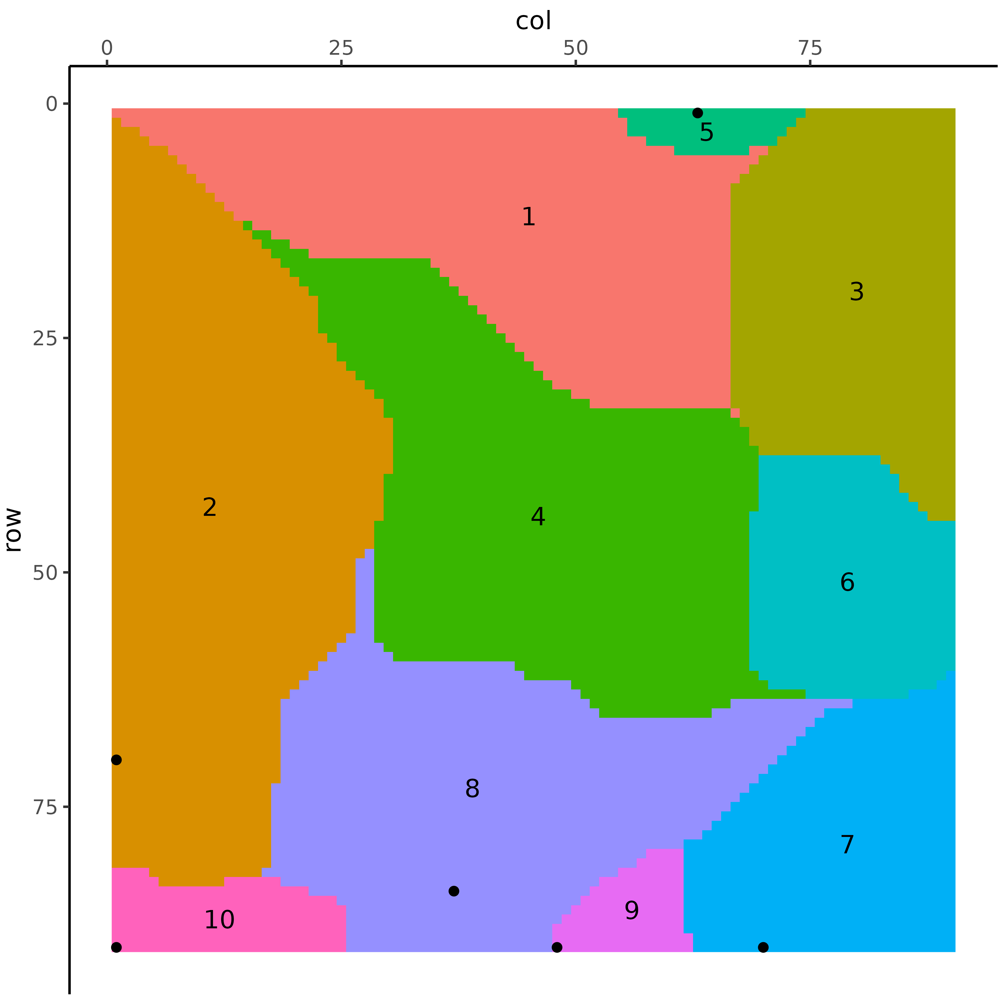
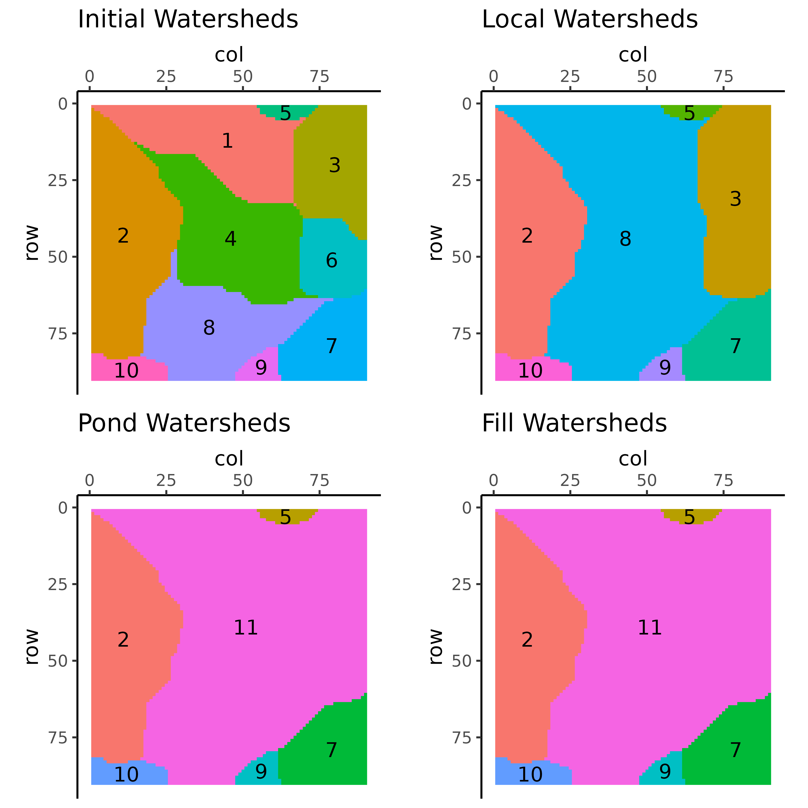

Flow plots are simply a way of visualizing what LITAP is doing under the hood.
In the following examples, we will be using the output from complete run on the supplied “testELEV.dbf”. You can find the original DEM file in the LITAP extdata folder by using the system.file() function. For more information on the flow_mapper() function see the Getting Started Vignette.
Let’s first copy this file to your working directory with:
file.copy(system.file("extdata", "testELEV.dbf", package = "LITAP"), ".")## [1] FALSE## LITAP v0.6.0
## LITAP is still in development; Help us by submitting bugs/feature requests:
## http://github.com/FRDC-SHL/LITAP/issues
# Save output to working directory
flow_mapper("testELEV.dbf", grid = 1, nrow = 90, ncol = 90, clean = TRUE) ## CALCULATING DIRECTIONS## CALCULATING WATERSHEDS## REMOVING INITIAL PITS## CALCULATING POND (GLOBAL) WATERSHEDS## CALCULATING FILL PATTERNS## INVERTING DEM## CALCULATING INVERTED DIRECTIONS## CALCULATING INVERTED WATERSHEDS## REMOVING INVERTED PITS## CREATING REPORT## Run took: 0.27 minWe will load the rds file (R data files) for the final dems and stats file.
dem <- readRDS("./testELEV/flow/dem_fill.rds")
inverted_dem <- readRDS("./testELEV/flow/dem_inverted.rds")
pond_stats <- readRDS("./testELEV/flow/stats_pond.rds")Basic maps
By default, the flow_plot() function displays relief maps, using the terrain() and hillShade() functions from the raster package. Note the outer border of dark grey, this represents unknown cells, as the relief calculations do not work on cells without neighbours.
flow_plot(dem)
Alternatively, you can plot elevation data directly.
flow_plot(dem, type = "elevation")
Cell numbering
You can number the cells in a plot with seqno = TRUE:

If you’re only interested in certain cells, specify which ones with cells = c() and highlight = TRUE
flow_plot(dem, type = "elevation", rlim = c(20, 30), clim = c(35, 45),
seqno = TRUE, cells = c(3187:3193, 3336:3343), highlight = TRUE)
Flow directions
You can plot individual flow directions with dir = TRUE.

In combination with cell numbers

Only for certain cells (this will show the entire flow path that a given cell is on)
flow_plot(dem, type = "elevation", rlim = c(20, 30), clim = c(35, 45),
dir = TRUE, cells = c(3187:3193, 3336:3343))
Only for certain cells and show cell numbers
flow_plot(dem, type = "elevation", rlim = c(20, 30), clim = c(35, 45),
dir = TRUE, seqno = TRUE, cells = c(3187:3193, 3336:3343))
Highlight the cells of interest
flow_plot(dem, type = "elevation", rlim = c(20, 30), clim = c(35, 45),
dir = TRUE, seqno = TRUE, cells = c(3187:3193, 3336:3343), highlight = TRUE)
Flow directions by upslope area
You can filter the flow directions to show only those with an upslope area greater than some threshold:
flow_plot(dem, type = "elevation", dir = TRUE, upslope_threshold = 500)
Ridge Lines
To look at ridge lines, use the inverted dem files
flow_plot(inverted_dem, type = "elevation", dir = TRUE, upslope_threshold = 250)
Watersheds
You can also highlight watersheds
flow_plot(db = dem, type = "elevation", shed = TRUE, shed_type = "initial") +
labs(title = "Initial Watersheds")
Watershed pits
flow_plot(db = dem, type = "elevation", shed = TRUE, shed_type = "initial",
pits = TRUE)
Comparing watersheds at different stages of pit removal
- Initial = no removal
- Local = smoothing, only small pits removed
- Pond = looking at overflow in 2nd pit removal process
- Fill = looking at overflow in a second way in 3rd pit removal process
